2243.2 Génie Logiciel - 2026-2027
Vue d'ensemble
1. Introduction à UML
2. Spécification des besoins par les cas d'utilisation
3. Spécifications détaillées des cas d'utilisation
4. Diagrammes de séquences systèmes
Cycle de vie d'un logiciel ou système :
Plugin pour VS Code
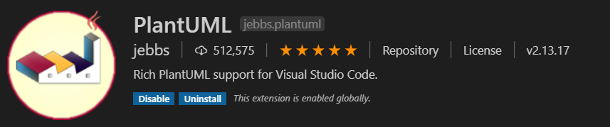
Serveur : https://yk-hes-ete.k8s-ext.ing.he-arc.ch/
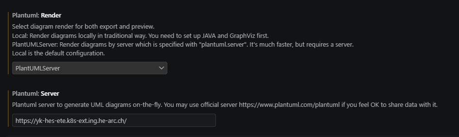
Objet conçu et construit (artefact) :
| Représenter un sujet d'études | Représentativité |
| Ex. : circuits électriques | |
| S'appliquant à plusieurs cas de ce sujet | Généricité |
| Ex. : mesures (tension, intensité, ...) sur des circuits | |
| Incarnant un point de vue sur ces cas | Abstraction |
| Ex. : U = RI ⇒ abstraction de la longueur des fils, etc. |
Un même sujet d'études peut avoir plusieurs modèles
⇒ Chaque modèle donne un point de vue différent sur le sujet
| Structuraux |
|---|
| Diagramme de classes (paquetages) |
| Diagramme d'objets |
| Diagramme de composants |
| Diagramme de déploiement |
| Comportementaux |
|---|
| Diagramme des cas d'utilisation |
| Diagramme de séquence |
| Diagramme de collaboration |
| Diagramme états-transitions |
| Diagramme d'activités |
UML n'est pas une garantie de bonne modélisation
Chaque diagramme apporte une vision et une information complémentaire
Chaque diagramme peut être utilisé à divers endroits et affiné progressivement
Un cas d'utilisation (use case) est
Il est décrit comme action-réaction
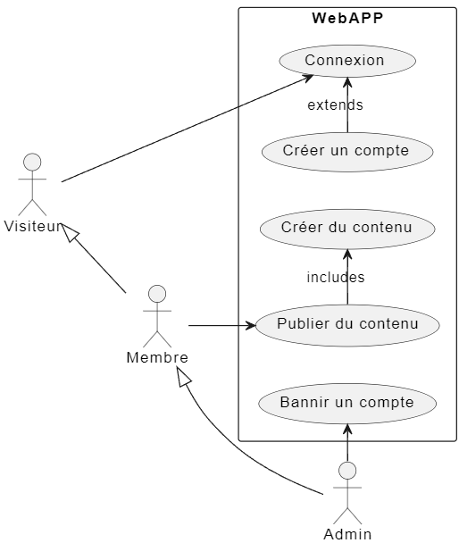
Utilisent les fonctions principales du système.
Souvent ils sont les déclencheurs des services.
Effectuent des tâches secondaires nécessaires au bon fonctionnement du système.
Un cas d'utilisation est une opération
Un cas d'utilisation
Association simple entre acteur et cas d'utilisation
l'acteur interagit avec le cas d'utilisation et vice-versa
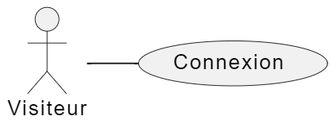
Association avec relation de navigabilité
interaction dans un seul sens
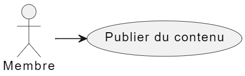
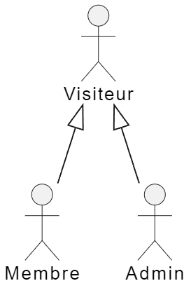
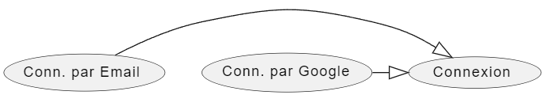
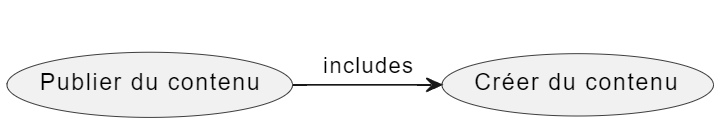
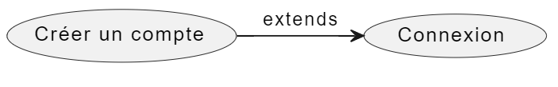
Aucun format « formel » n'est fixé par UML pour ce genre de description
Une structure de description possible :
| NOM DU CAS D'UTILISATION | |
| Objectifs – description - | |
| Acteur principal | |
| Acteurs secondaires | |
| Déclencheur - trigger - | |
| Préconditions | |
| Post conditions | |
| Scénario nominal (suite d'interactions) | |
| Scénarios alternatifs | |
| Exigences, contraintes |
| NOM DU CAS D'UTILISATION | CALL CABIN (UC2) |
| Objectif | |
| Acteur principal | Utilisateur de l'ascenseur |
| Acteurs secondaires | - |
| Déclencheur (trigger) | L'utilisateur appuie sur le bouton [^] ou [v] |
| Précondition |
|
| Post-conditions |
|
| Scénario nominal |
|
| Scénarios alternatifs | 2b. Si l'ascenseur est presque plein (charge >80% max) la demande est mémorisées et les étapes 2-4 mises en attente. |
| Exigences, contraintes | L'ascenseur doit arriver dans un délai maximum de 30 secondes |
Un scénario est
Séquence particulière d'actions, et d'interactions entre acteurs et système.
On définit
On définit
Représentation formelle des
Tient compte de l'
⇒ Visualise un scénario du diagramme de Use Cases
Son fonctionnement ne sera détaillé qu'en phase de conception.
Les acteurs produisent
Le système renvoie
Ils sont représentés graphiquement sur des diagrammes de séquence
(interactions entre acteurs et système)
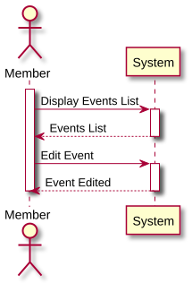
Conditions :
Boucles :
Groupes
Etc.
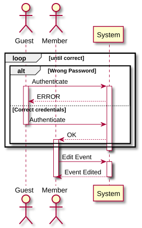
Voir site du cours